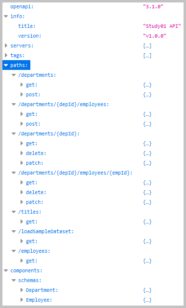

The API description format for the REST APIs is the OpenAPI
Specification v3.1.1.
For the API design and documentation, it is used the Stoplight.
This is an OpenAPI designer with a built-in style guide.
The screenshots from the Stoplight API project 'KP_API01':
The child projects of this project 'Study01':
Java source code. Packages:

 project 'Study01-2-server', application sources :
kp
project 'Study01-2-server', application sources :
kp
project 'Study01-2-server', test sources :
kp
project 'Study01-3-client', application sources :
kp.client

 project 'Study01-2-server' :
Java API Documentation ●
Java Test API Documentation
project 'Study01-2-server' :
Java API Documentation ●
Java Test API Documentation
project 'Study01-3-client' :
Java API Documentation
The server stubs are generated with the
OpenAPI Generator
Maven plugin.
The Maven plugin generates the Java classes for the API packages and the model packages.
As a source, it uses the YAML file '
openapi.yaml' (exported from Stoplight).
Action:

 1. With batch file
"01 MVN clean install.bat" create library 'Study01-1-generator-1.0.0-SNAPSHOT.jar'.
1. With batch file
"01 MVN clean install.bat" create library 'Study01-1-generator-1.0.0-SNAPSHOT.jar'.
Action:
1. With batch file
"01 MVN clean install run.bat" start the SpringBoot server.
2. With URL http://localhost:8080
open in the web browser the
home page.
3. On this
home page
select 'Load sample dataset'.
4. With batch file
"02 CURL CRUD.bat" create, read, update, and delete departments and employees.
5. With batch file
"03 CURL load and read.bat" load the sample dataset and get departments and employees.
 2.1. The
home page.
2.1. The
home page.
 The screenshot of the home page.
The screenshot of the home page.
From point 2.2 to point 2.10 below are presented the results from links on the home page.
2.2. The 'Swagger UI' link: http://localhost:8080/swagger-ui/index.html
The screenshots of the accessed 'Swagger UI' pages:
2.3. The 'Get all departments' link: http://localhost:8080/departments.
The controller method:
kp.company.controller.DepartmentsController::getDepartments.
The result from the 'Get all departments'.
2.4. The 'Get the department by id' link: http://localhost:8080/departments/1.
The controller method: kp.company.controller.DepartmentsController::getDepartmentById.
The result from the 'Get the department by id'.
2.5. The 'Get all employees in department' link:
http://localhost:8080/departments/1/employees.
The controller method: kp.company.controller.DepartmentsController::getEmployeesInDepartment.
The result from the 'Get all employees in department'.
2.6. The 'Get the employee in department by ids' link:
http://localhost:8080/departments/1/employees/101.
The controller method: kp.company.controller.DepartmentsController::getEmployeeInDepartmentByIds.
The result from the 'Get the employee in department by ids'.
2.7. The 'Get all employees' link:
http://localhost:8080/employees.
The controller method: kp.company.controller.EmployeesController::getEmployees.
The result from the 'Get all employees'.
2.8. The 'Get all titles' link: http://localhost:8080/titles.
The controller method: kp.company.controller.TitlesController::getTitles.
The result from the 'Get all titles'.
2.9. The 'API Documentation' link: http://localhost:8080/v3/api-docs.

The result from the 'API Documentation'.
2.10. The 'Actuator' link: http://localhost:8080/actuator.
The result from the 'Actuator'.
2.11. The controller methods are called with the execution of the batch file "02 CURL CRUD.bat".
The screenshot of the console log from the run of the batch file "02 CURL CRUD.bat"
2.12. The
screenshot of the console log from the run of the batch file "03 CURL load and read.bat"
The API client is generated with the OpenAPI Generator Maven plugin.
Action:
1. With batch file
"01 MVN clean install run.bat" build and start the client application.
3.1. Class
kp.client.ClientApplication

Console log from 'ClientApplication.callEndpoints()' method.
{kind=link}
{kind=link}
{kind=link}
{kind=link}
{kind=link}
{kind=link}
{kind=link}